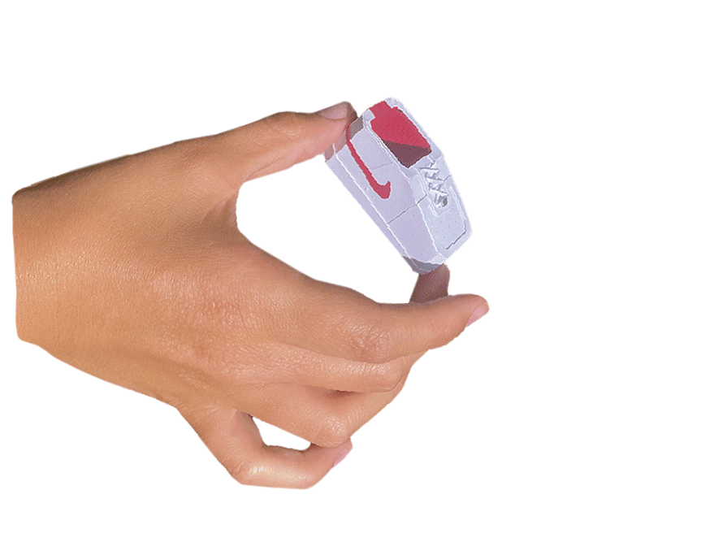

mini af-1
paper sculptures,
porto 2022.
This small project was made during my curricular internship at the Oupas!Design studio.
Starting from my supervisors’ process, and using the same tools and programs that are used at Oupas!, I designed and assembled these small paper sculptures.
This project was a consolidation of the knowledge I acquired during my internship, in the sense that I did independently all the steps that I followed and executed before with supervision: idealization and sketching, 3D drawing using SketchUp, planning with Illustrator, cutting with SilhouetteConnect, assembling the pieces in paper and documenting the final object.
